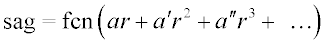

Adds small deformations to an object.
First Syntax (Short format):
DEFORM k [ k' ]
Second Syntax (Long format):
DEFORM x y z a [ a' a" ... ] [ AXIS a,b,c ] [ FCN fcn ]
| Option | Description |
|---|
| k k' | explicit surface functions |
| x y z | point on the object's surface |
| a a' a" ... | aspheric deformation coefficients (up to 20) |
| AXIS a,b,c | normal direction of axis |
| FCN fcn | optional macro function |
Remarks
- With the short format, one or two general
deformation functions defined entirely by the given explicit surface functions
(GENERAL EXPLICIT, FITTED EXPLICIT, ZERNIKE, SAMPLED,
EXPLICIT or USERSAG) are added to the object surface.
- With the long format, a small
user-definable aspheric deformation is added to the previous object. This
deformation is rotationally symmetric about the axis defined by either the normal
vector that passes through the point x y z on the object's
surface or the given point a,b,c and AXIS.
- The deformation or sag value as a function
of perpendicular distance from the aspheric axis (r below) is
given by,

where fcn is the name of an optional macro function
(intrinsic, for example, SIN, or user-defined $FCN).
DEFORM Examples